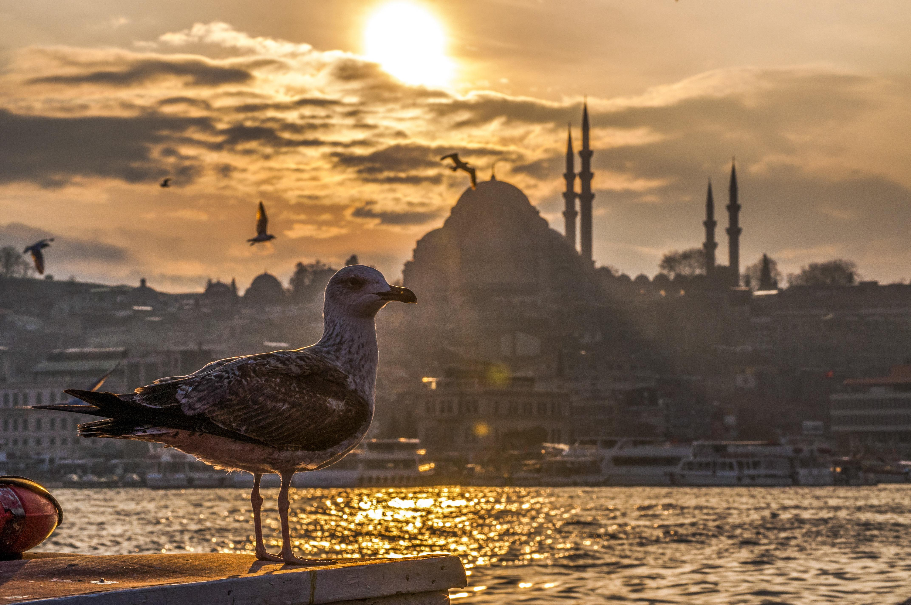

Natural Wonders of Türkiye
Türkiye's diverse landscapes range from the serene beaches of the Aegean and Mediterranean to the enchanting fairy chimneys of Cappadocia and the awe-inspiring peak of Mount Ararat. This blend of natural wonders makes it an ideal destination for those seeking adventure and beauty in every corner.